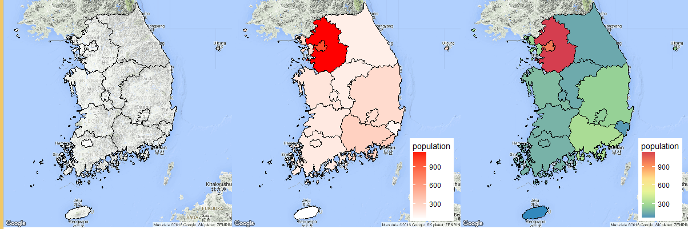

데이터 과학
단계구분도(choropleth)
학습 목표
- 단계구분도를 이해한다.
- 대한민국인구를 단계구분도를 사용하여 지리정보 시각화한다.
- 단계구분도 전용 R 팩키지와 그래프 문법 ggplot 팩키지로 지리정보를 시각화한다.
단계구분도(choropleth)
단계구분도(Choropleth map)는 주제도(thematic map)으로 인구밀도, 1인당 소득 같은 정보를 비례하여 음영처리나 패턴을 넣어 지도상에 표현하는 방식이다. 단계구분도를 단계구분도 전용 choroplethr 팩키지와 그래픽 문법 범용 ggplot 팩키지를 사용하여 지리정보로 도식화한다.
choroplethr 팩키지 단계구분도
choroplethr1은 R에서 단계구분도 생성을 간략화하려는 목적으로 개발되었다. 특히, Administrative Level 1 Maps 소품문에 나와 있듯이, 인구조사 센서스 데이터가 있는 경우 쉽게 단계구분도를 쉽게 적용할 수 있다.
사용시 주의사항
admin1_choropleth함수는 지명은admin1.regions에 기재된 영문명 을 사용한다.- 단계구분도에 사용되는 값은 항상 변수명이
value만 가능하다.
##==========================================================================
## 팩키지 및 데이터 가져오기
##==========================================================================
library(choroplethr);library(choroplethrAdmin1);library(Kormaps);library(dplyr)
setwd("~/Dropbox/01_data_science") # 윈도우
# 지도데이터 가져오기
data(admin1.regions)
head(admin1.regions)
admin.all <- tbl_df(admin1.regions)
admin.kr <- filter(admin.all, grepl("south korea", country))
admin1_map("south korea") # 가져온 데이터가 맞는 것인지 확인하는 명령어
# 시각화에 사용될 2010년 대한민국 인구센서스 데이터
df_korea_census <- korpopmap1@data
df_korea_census$name_eng <- tolower(df_korea_census$name_eng)
df_korea_census_mapdata <- df_korea_census %>%
select(16,21)
names(df_korea_census_mapdata) <- c("region","value")
# choroplethrAdmin1 지도영문명 일치
# 서울 --> 서울특별시, 제주 --> 제주특별자치시, 세종시는 자료가 없음 (검은색 표시)
df_korea_census_mapdata$region[df_korea_census_mapdata$region=="seoul"] <- "seoul-teukbyeolsi"
df_korea_census_mapdata$region[df_korea_census_mapdata$region=="jeju"] <- "jeju-teukbyeoljachido"
##==========================================================================
## 대한민국 2010년 인구 단계구분도 지리정보 시각화
##==========================================================================
admin1_choropleth(country.name = "south korea",
df = df_korea_census_mapdata,
title = "2010 대한민국 인구",
legend = "인구(단위:명)",
num_colors = 1)choroplethr, choroplethrAdmin1, Kormaps 팩키지를 활용한 단계구분도로 시각화하였다. 2010년 시점 세종시는 정보가 없어 검은색으로 나타나 있음에 주의한다. 경기도와 서울에 대분의 인구가 몰려있음을 단계구분도를 통해 시각적으로 확인할 수 있다.

ggplot 팩키지 단계구분도 2
단계구분도 전용 choroplethr 팩키지 대신 범용 ggplot 팩키지를 사용해서도 단계구분도를 수월하게 지리정보로 표현할 수 있다. 기본적으로 .shp 파일에 id 칼럼을 단계구분도에 표시되는 정보에 연결하는 것이 핵심이다. 따라서, .shp 파일에 id 칼럼을 확인하고, 단계구분도로 단계를 표시할 데이터프레임에 필히 id 칼럼을 포함하여 매칭될 수 있도록한다.
##==========================================================================
## 팩키지 및 데이터 가져오기
##==========================================================================
# 라이브러리 및 작업 디렉토리 설정
library(choroplethr);library(choroplethrAdmin1);library(Kormaps);library(dplyr);library(ggmap);library(maptools);
library(RColorBrewer);library(scales)
setwd("~/Dropbox/01_data_science") # 윈도우
##==========================================================================
## .shp 파일 및 단계구분도 적용 데이터 가져오기
##==========================================================================
# `Kormaps` 팩키지 .shp 지도 사용 (2010 행정지도)
class(korpopmap1)
names(korpopmap1)
# 윈도우 인코딩문제 때문에 길어진 코드
tmp <- korpopmap1@data %>% select(21)
names(tmp) <- c("population")
tmp$population <- tmp$population / 10^4
# id 값을 .shp 파일과 동일하게 유지 (여기서 id는 각 시도에 대응)
kor.dat <- data.frame(NAME_1=korpopmap1$name_eng, id=korpopmap1$id)
kor.dat <- bind_cols(kor.dat, tmp)
kor.dat
# ggplot으로 시각화 위해 데이터프레임으로 변환
korea.shp.f <- fortify(korpopmap1, region = "id")
merge.shp.coef<-merge(korea.shp.f, kor.dat, by="id", all.x=TRUE)
korea.population.2010 <-merge.shp.coef[order(merge.shp.coef$order), ]
head(korea.population.2010)
##==========================================================================
## 대한민국 2010년 인구 단계구분도 지리정보 시각화
##==========================================================================
# 1 단계 : 시범 지리정보 도식화
ggplot() +
geom_polygon(data = korea.population.2010,
aes(x = long, y = lat, group = group, fill = population),
color = "black", size = 0.25) +
coord_map()
# 2 단계 : 배포 품질 도식화
ggplot() +
geom_polygon(data = korea.population.2010,
aes(x = long, y = lat, group = group, fill = population),
color = "black", size = 0.25) +
coord_map()+
scale_fill_distiller(name="인구 : 단위(만명)", palette = "Greens", breaks = pretty_breaks(n = 10), direction = 1)+
theme_nothing(legend = TRUE)+
labs(title="대한민국 인구 (2010년)")